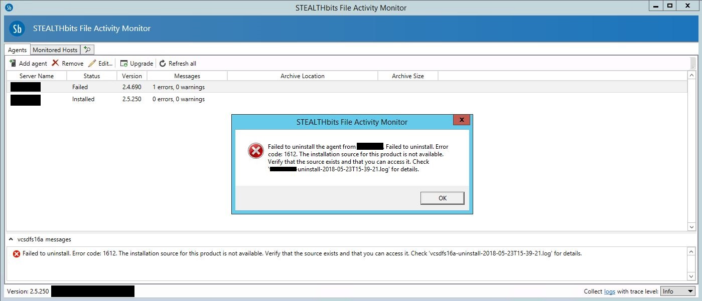

Summary: SFAM Agent will not uninstall because the installation source isn't available.
Issue: The SFAM/SAM agent will not uninstall because the installation source isn't available.
Error: Failed to uninstall the agent from [SERVER]. Failed to uninstall. Error code 1612. The installation source for this product is not available. Verify that the source exists and that you can access it. Check 'xxxxx-uninstall-xxxx-xx-xxTxx-xx-xx.log' for details.

In this specific case, somehow the MSI from the MSI cache (%SystemRoot%/Installer) was removed.
This prevented the agent from being uninstalled using the SFAM application on the Application Server and directly from the File Server (Add/Remove Programs).
Instructions: 1. Copy the agent's installation package to the server running the agent you're trying to uninstall (target server).
The MSI will be located in C:\Program Files (x86)\STEALTHbits\File Monitoring\Agents\x64\SBFileMonAgent.msi
(If you install SFAM on the file server for this step, please remove it after the agent is uninstalled.)
2. Uninstall the agent through Add/Remove Programs on the target server. When it asks for the package, point it to the copied SBFileMonAgent.msi
3. The agent should show as "Not installed" in the SFAM application now, and you should be able to remove the agent from the list.
Module: File Activity Monitor - EMC/Celerra;File Activity Monitor - NetApp;File Activity Monitor - Windows
Versions: 2.4+
Dev Ticket: 25582, SFAM-1269
Legacy Article ID: 1994